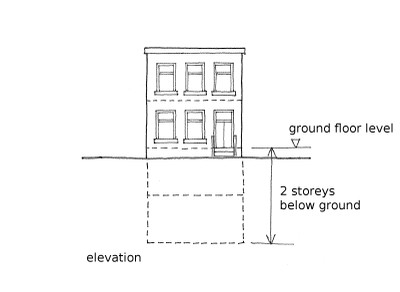

Number of storeys below ground [HB]
Number of storeys below the level of the primary entrance, otherwise described as the number of basements or basement levels. This does not include the ground floor. If it is known that there are no storeys below ground floor, the number is zero. It includes storage and mechanical plant levels only if these cover over 50% of the plan area.
The number of storeys below ground can be recorded as an exact number, or as a range, or as an approximate number if the exact number is not known. It can also be recorded as unknown.
